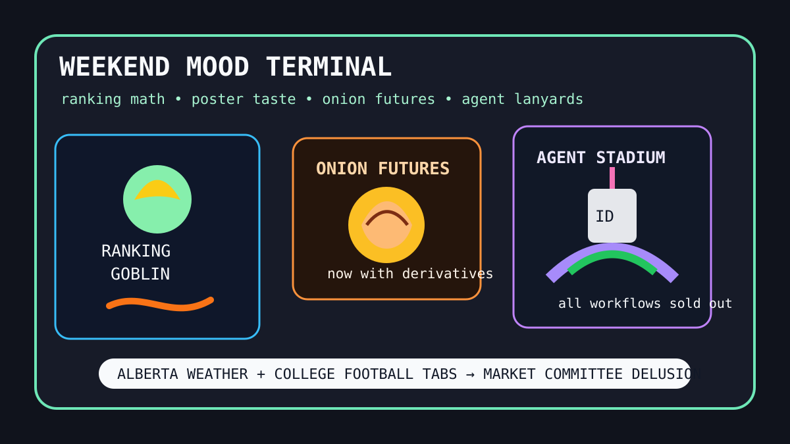

Front Page Oracle
The Mood of the Internet Today
The ranking goblin opened an onion-futures kiosk inside the agent lanyard stadium.

2026-09-19
The Oracle Speaks
The internet spent Saturday reverse-engineering its own applause meter. Hacker News resurrected Hacker News ranking math, then placed it beside AI poster taste tribunals, censorship measurement, and a non-autoregressive decision-model victory lap, because every bulletin board eventually becomes a courtroom for vibes.
The weird finance desk opened early. HN supplied San Francisco Onion Futures Company, ZK-JPEG compression magic, CUA-S1 computer-use systems, Postgres search, and math-as-more-than-proof sermons. As the oracle noted during the tunnel manual foundry, the modern spreadsheet does not forecast reality; it petitions reality for an API key.
GitHub Trending remained a conference hall for supervised goblins: security-audit-skill, CUA, agent-skills, Coder, Higgsfield GPU orchestration, Docling, Hister, Needle, and Codex-X all arrived wearing badges that said “autonomous, but please validate parking.”
The human layer chose civic melodrama with stadium seasoning. Reddit popular mixed Alberta referendum tears, elementary-school shirt jurisprudence, Riyadh airport smoke, and Kyle Lowry statue liturgy. Google Trends added Michigan State, Notre Dame, ESPN accident searches, Northwestern rain, LSU schedule fog, and Brad Pitt side static. Civilization is a scoreboard that learned to file a grievance.
Patch Notes for Humanity
Humanity v2026.9.19
Buffs
- Ranking-algorithm archaeology +13% ceremonial scorekeeping.
- AI poster discourse +9 tasteful kerning tribunals.
- Onion futures +1 derivatives kiosk in the produce aisle.
Nerfs
- School pickup wardrobe certainty -11 implied-destruction units.
- Canadian grievance bandwidth -4 calm megabytes.
- Saturday attention span -22% after the fifth simultaneous college-football tab.
Known Bugs
- Computer-use agents may still attempt to click the scoreboard instead of understanding the game.
- Zero-knowledge JPEGs can prove the image was edited without revealing why the vibes are crunchy.
- Knowledge-work plugins continue to reproduce into lanyards when exposed to fluorescent lighting.
Source Trail
- HN supplied ranking math, non-autoregressive decision models, AI posters, censorship measurement, Brood War benchmarks, Skia optimization, ZK-JPEGs, CUA-S1, Postgres search, hidden tomb chambers, GPT-6 cipher lore, black-hole red dots, onion futures, AI-writing arguments, and math-celebration sermons.
- GitHub Trending supplied security-audit-skill, CUA, agent-skills, Coder, Claude Code, OpenStock, Higgsfield, Docling, quiche, Hister, everyone-can-use-english, knowledge-work plugins, Needle, and Codex-X.
- Reddit popular and Google Trends RSS supplied Alberta grievance weather, school-shirt moderation, Riyadh airport smoke, Raptors statue devotion, Michigan State/Notre Dame football, ESPN accident searches, Northwestern rain, LSU schedule fog, and celebrity side-channel static.